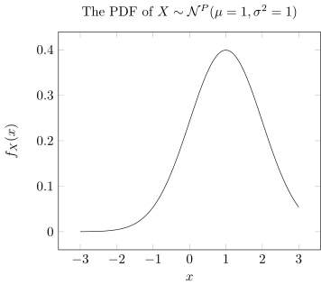
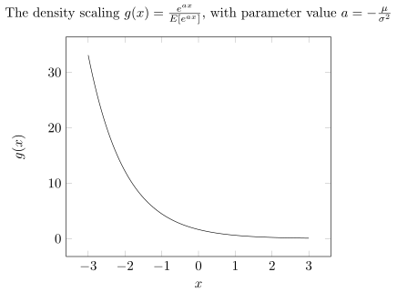
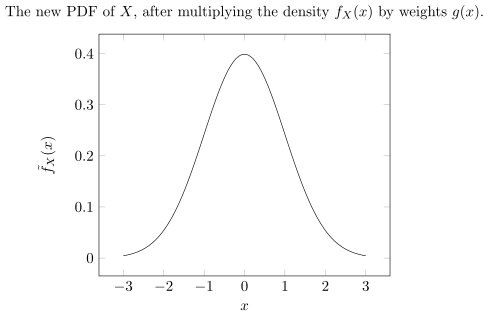

Introduction
One of the most popular technical tools in financial engineering is the Girsanov theorem. In this blog-post, I intend to provide the dear reader a beginner-friendly introduction and an intuitive gut feel for these tools.
The change of measure technique was used by Heylette Geman, Nicole El Karoui and Jean-Charles Rochet in their seminal note Changes of Numeraire, Changes of Probability Measure and Option Pricing.
Change of Probability.
Change of Probability for a Random Variable.
Consider a random variable \(X\) defined on a sample space \(\Omega\) having zero mean. We want to change the mean of \(X\) so that \(\mu\neq 0\). Of course, it is easy to change the mean of a random variable: If \(X\) has mean \(0\), then the random variable \(X+\mu\) has mean \(\mu\). However, it might be that the variable \(X+\mu\) does not share the same possible values as \(X\). For example, take \(X\) to be a uniform random variable on \([-1,1]\). While \(X+1\) has mean \(1\), the density of \(X+1\) would be non-zero on \([0,2]\) instead of \([-1,1]\).
Our goal is to find a good way to change the underlying probability \(\mathbb{P}\), and thus the distribution of \(X\), so that the set of outcomes is unchanged. If \(X\) is a discrete random variable, say with \(\mathbb{P}(X=-1)=\mathbb{P}(X=1)=1/2\), we can change the probability in order to change the mean easily. It suffices to take \(\tilde{\mathbb{P}}\) so that \(\tilde{\mathbb{P}}(X=1)=p\) and \(\mathbb{P}(X=-1)=1-p\) for some appropriate \(0\leq p\leq1\).
If \(X\) is a continuous random variable, with a PDF \(f_{X}\), the probabilities can be changed by modifying the PDF. Consider the a new PDF:
\[\begin{aligned} \tilde{f}_{X}(x) & =f_{X}(x)g(x) \end{aligned}\]
for some function \(g(x)>0\) such that \(\int f(x)g(x)dx=1\). Clearly, \(f_{X}(x)g(x)\) is also a PDF and \(f_{X}(x)>0\) if and only if \(f_{X}(x)g(x)>0\), so that the possible values of \(X\) are unchanged. A convenient (and important!) choice of function \(g\) is:
\[\begin{aligned} g(x) & =\frac{e^{ax}}{\int_{\mathbf{R}}e^{ax}f_{X}(x)dx}=\frac{e^{ax}}{\mathbb{E}[e^{aX}]},\quad a\in\mathbf{R} \end{aligned} \tag{1}\]
assuming \(X\) has a well-defined MGF. Here \(a\) is a parameter that can be tuned to fit to a specific mean. The normalization factor in the denominator is the MGF of \(X\). It ensures that \(f_{X}(x)g(x)\) is a PDF. Note that if \(a>0\), the function \(g\) gives a bigger weight to large values of \(X\). We say that \(g\) is biased towards the large values.
Example 1 (Biasing a uniform random variable) Let \(X\) be a uniform random variable on \([0,1]\) defined on \((\Omega,\mathcal{F},\mathbb{P})\). Clearly, \(\mathbb{E}[X]=1/2\). How can we change the PDF of \(X\) so that the possible values are still \([0,1]\), but the mean is \(1/4\). We have that the PDF is \(f_{X}(x)=1\) if \(x\in[0,1]\) and \(0\) elsewhere. Therefore, the mean with the new PDF with parameter \(a\) as in the Equation 1 is:
\[\begin{aligned} \tilde{\mathbb{E}}[X] & =\int_{0}^{1}x\tilde{f}(x)dx\\ & =\int_{0}^{1}\frac{xe^{ax}}{\mathbb{E}[e^{aX}]}dx\\ & =\frac{a}{e^{a}-1}\int_{0}^{1}xe^{ax}dx\\ & =\frac{a}{e^{a}-1}\left(\left[x\frac{e^{ax}}{a}\right]_{0}^{1}-\frac{1}{a}\int_{0}^{1}e^{ax}dx\right)\\ & =\frac{a}{e^{a}-1}\left(\frac{e^{a}}{a}-\frac{1}{a}\frac{e^{a}-1}{a}\right)\\ & =\frac{e^{a}}{e^{a}-1}-\frac{1}{a} \end{aligned}\]
For \(\tilde{\mathbb{E}[X]}\)to be equal to \(1/4\), we get numerically \(a\approx-3.6\). Note that the possible values of \(X\) remain the same under the new probability. However, the new distribution is no longer uniform! It has bias towards values closer to zero, as it should.
Example 2 (Biasing a Gaussian random variable.) Let \(X\) be a Gaussian random variable with mean \(\mu\) and variance \(\sigma^{2}\). How can we change the PDF of \(X\) to have mean \(0\)? Going back to Equation 1, the mean \(\mu\) under the new PDF with parameter \(a\) is:
\[\begin{aligned} \tilde{\mathbb{E}}[X] & =\int_{-\infty}^{\infty}x\tilde{f}(x)dx\\ & =\int_{-\infty}^{\infty}xg(x)f(x)dx\\ & =\int_{-\infty}^{\infty}x\cdot\frac{e^{ax}}{\mathbb{E}[e^{aX}]}\frac{1}{\sqrt{2\pi}\sigma}e^{-\frac{1}{2}\left(\frac{x-\mu}{\sigma}\right)^{2}}dx\\ & =\frac{1}{e^{\mu a+\frac{1}{2}a^{2}\sigma^{2}}}\frac{1}{\sqrt{2\pi}\sigma}\int_{-\infty}^{\infty}x\cdot\exp\left[-\frac{1}{2}\left(\frac{x^{2}-2\mu x+\mu^{2}-2a\sigma^{2}x}{\sigma^{2}}\right)\right]dx\\ & =\frac{1}{e^{\mu a+\frac{1}{2}a^{2}\sigma^{2}}}\frac{1}{\sqrt{2\pi}\sigma}\int_{-\infty}^{\infty}x\cdot\exp\left[-\frac{1}{2}\left(\frac{x^{2}-2(\mu+a\sigma^{2})x+(\mu+a\sigma^{2})^{2}-2\mu a\sigma^{2}-a^{2}\sigma^{4}}{\sigma^{2}}\right)\right]dx\\ & =\frac{e^{\mu a+a^{2}\sigma^{2}/2}}{e^{\mu a+\frac{1}{2}a^{2}\sigma^{2}}}\frac{1}{\sqrt{2\pi}\sigma}\int_{-\infty}^{\infty}x\exp\left[-\frac{1}{2}\left(\frac{x-(\mu+a\sigma^{2})}{\sigma}\right)^{2}\right]dx\\ & =\frac{1}{\sqrt{2\pi}\sigma}\int_{-\infty}^{\infty}x\exp\left[-\frac{1}{2}\left(\frac{x-(\mu+a\sigma^{2})}{\sigma}\right)^{2}\right]dx \end{aligned}\]
For the specific choice of the parameter \(a=\mu/\sigma^{2}\), we recover the PDF of a Gaussian random variable with mean \(0\). But, we can deduce more. The new PDF is also Gaussian. This was not the case for uniform random variables. In fact, the new PDF is exactly the same as the one of \(X-\mu\). For if, \(a=\mu/\sigma^{2}\), we have:
\[\begin{aligned} \tilde{\mathbb{E}}[X] & =\frac{1}{\sqrt{2\pi}\sigma}\int_{-\infty}^{\infty}x\exp\left[-\frac{x^{2}}{2\sigma^{2}}\right]dx \end{aligned}\]
and observe that if \(Y=X-\mu\), then:
\[\begin{aligned} F_{Y}(x) & =\mathbb{P}(X-\mu<x)\\ & =\mathbb{P}(X\leq x+\mu)\\ & =F_{X}(x+\mu)\\ \frac{d}{dx}(F_{Y}(x)) & =\frac{d}{dx}(F_{X}(x+\mu))\\ f_{Y}(x) & =f_{X}(x+\mu)\cdot\frac{d}{dx}(x+\mu)\\ f_{Y}(x) & =f_{X}(x+\mu)\\ & =\frac{1}{\sqrt{2\pi}\sigma}\exp\left[-\frac{1}{2}\left(\frac{x+\mu-\mu}{\sigma}\right)^{2}\right]\\ & =\frac{1}{\sqrt{2\pi}\sigma}\exp\left[-\frac{x^{2}}{2\sigma^{2}}\right] \end{aligned}\]
In other words:
For Gaussians, changing the mean by recentering is equivalent to changing the probability as in Equation 1.
Visualization
Let \(X\) be gaussian with mean \(\mu=1\) and variance \(\sigma^2 = 1\). The PDF of \(X\) is:
Show the code
%%itikz --temp-dir --tex-packages=tikz,pgfplots --tikz-libraries=arrows --implicit-standalone
\begin{tikzpicture}[scale=1.5]
\begin{axis}[xlabel = $x$, ylabel={$f_X(x)$}, title={The PDF of $X \sim \mathcal{N}^{P}(\mu=1,\sigma^2=1)$},domain=-3:3]
\addplot[color=black,samples=100]{1/(sqrt(2*3.14))*exp(-0.5*((x-1)*(x-1))};
\end{axis}
\end{tikzpicture}
I choose \(g(x) = \frac{e^{ax}}{\mathbb{E}[e^{aX}]} = \frac{e^{ax}}{e^{\mu a + \frac{1}{2}a^2 \sigma^2}}\), \(\mu=1\), \(\sigma^2 = 1\) and set the value of the parameter \(a = \frac{\mu}{\sigma^2} = -1\).
Show the code
%%itikz --temp-dir --tex-packages=tikz,pgfplots --tikz-libraries=arrows --implicit-standalone
\begin{tikzpicture}[scale=1.5]
\begin{axis}[xlabel = $x$, ylabel={$g(x)$}, title={The density scaling $g(x)=\frac{e^{ax}}{E[e^{ax}]}$, with parameter value $a=-\frac{\mu}{\sigma^2}$},domain=-3:3]
\addplot[color=black,samples=100]{exp(-x)/exp(-0.5)};
\end{axis}
\end{tikzpicture}
The new density \(\tilde{f}_X(x)\) obtained multiplying \(f_X(x)\) by the weights \(g(x)\) is the same as a gaussian centered at \(0\) with variance \(1\) :
Show the code
%%itikz --temp-dir --tex-packages=tikz,pgfplots --tikz-libraries=arrows --implicit-standalone
\begin{tikzpicture}[scale=1.5]
\begin{axis}[xlabel = $x$, ylabel={$\tilde{f}_X(x)$}, title={The new PDF of $X$, after multiplying the density ${f}_X(x)$ by weights $g(x)$.},domain=-3:3]
\addplot[color=black,samples=100]{1/(sqrt(2*3.14))*exp(-0.5*(x*x))};
\end{axis}
\end{tikzpicture}
This is a very special property of the Gaussian distribution. The exponential and Poisson distributions have a similar property.
Intuitively, if we have a brownian motion with a drift \(dX_t = \mu dt + dB_t\), we can apply this idea to each time-slice \((X_t - X_s)\) of the process, we can recenter the gaussians to have mean \(0\), so the paths are driftless and it has the same distribution as a standard brownian motion.
Change of probability measure
Example 2 is very important and we will state it as a theorem. Before doing so, we notice that the change of PDF (Equation 1) can be expressed more generally by changing the underlying probability measure(length, area, weights) \(\mathbb{P}\) on the sample space \(\Omega\) on which the random variables are defined. More precisely, let \((\Omega,\mathcal{F},\mathbb{P})\) be a probability space, and let \(X\) be a random variable defined on \(\Omega\). We define a new probability \(\tilde{\mathbb{P}}\) on \(\Omega\) as follows:
If \(\mathcal{E}\) is an event in \(\mathcal{F}\), then:
\[\begin{aligned} \mathbb{\tilde{P}}(\mathcal{E}) & =\mathbb{\tilde{E}}[1_{\mathcal{E}}]=\int_{\mathbf{R}}1_{\mathcal{E}}\cdot\tilde{f}(x)dx\nonumber \\ & =\int_{\mathbf{R}}1_{\mathcal{E}}\cdot g(x)f_{X}(x)dx\nonumber \\ & =\int_{\mathbf{R}}1_{\mathcal{E}}\cdot\frac{e^{ax}}{\mathbb{E}[e^{aX}]}f_{X}(x)dx\nonumber \\ & =\mathbb{E}\left[1_{\mathcal{E}}\frac{e^{aX}}{\mathbb{E}[e^{aX}]}\right] \end{aligned}\]
Intuitively, we are changing the probability of each outcome \(\omega\in\mathcal{E}\), by the factor
\[ \begin{aligned} \frac{e^{aX(\omega)}}{\mathbb{E}[e^{aX}]} \end{aligned} \tag{2}\]
In other words, if \(a>0\), the outcomes \(\omega\) for which \(X\) has large values are favored. Note that equation (Equation 1) for the PDF is recovered, since for any function \(h\) of \(X\), we have:
\[\begin{aligned} \tilde{\mathbb{E}}[h(X)] & =\mathbb{E}\left[\frac{e^{aX}}{\mathbb{E}[e^{aX}]}h(X)\right]\\ & =\int_{\mathbf{R}}h(x)\frac{e^{ax}}{\mathbb{E}[e^{aX}]}f_{X}(x)dx \end{aligned}\]
In this setting, the above example becomes the preliminary version of the Cameron-Martin-Girsanov theorem:
Theorem 1 (Change of probability for a random variable) Let \(X\) be a Gaussian random variable with mean \(\mu\) and variance \(\sigma^{2}\) defined on \((\Omega,\mathcal{F},\mathbb{P})\). Then, under the probability \(\mathbb{\tilde{P}}\) given by:
\[\begin{aligned} \mathbb{\tilde{P}}(\mathcal{E}) & =\mathbb{E}\left[1_{\mathcal{E}}e^{-\frac{\mu}{\sigma^{2}}X+\frac{1}{2}\frac{\mu^{2}}{\sigma^{2}}}\right],\quad\mathcal{E}\in\mathcal{F} \end{aligned} \tag{3}\]
the random variable \(X\) is Gaussian with mean \(0\) and variance \(\sigma^{2}\).
Moreover, since \(X\) can be written as \(X=Y+\mu\) where \(Y\) is Gaussian with mean \(0\) and variance \(\sigma^{2}\) under \(\mathbb{P}\), we have that \(\mathbb{\tilde{P}}\) can be written as:
\[\begin{aligned} \mathbb{\tilde{P}}(\mathcal{E}) & =\mathbb{E}\left[1_{\mathcal{E}}e^{-\frac{\mu}{\sigma^{2}}Y-\frac{1}{2}\frac{\mu^{2}}{\sigma^{2}}}\right],\quad\mathcal{E}\in\mathcal{F} \end{aligned} \tag{4}\]
It is good to pause for a second and look at the signs in the exponential of equations (Equation 3) and (Equation 4). The signs in the exponential might be very confusing and is the source of many mistakes in the Cameron-Martin-Girsanov theorem. A good trick is to say that, if we want to remove \(\mu\), then the sign in front of \(X\) or \(Y\) must be negative. Then, we add the exponential factor needed for \(\tilde{\mathbb{P}}\) to be a probability. This is given by the MGF of \(X\) or \(Y\) depending on how we want to express it.
The probabilities \(\mathbb{P}\) and \(\tilde{\mathbb{P}}\), as defined in the equation (Equation 3) are obviously not equal since they differ by a factor in (Equation 2). However, they share some similarities. Most notably, if \(\mathcal{E}\) is an event of positive \(\mathbb{P}\)-probability, \(\mathbb{P}(\mathcal{E})>0\), then we must have \(\tilde{\mathbb{P}}(\mathcal{E})>0\), since the factor in () is always strictly positive. The converse is also true: if \(\mathcal{E}\) is an event of positive \(\tilde{\mathbb{P}}\)-probability, \(\tilde{\mathbb{P}}(\mathcal{E})>0\), then we must have that \(\mathbb{P}(\mathcal{E})>0\). This is because the factor in (Equation 2) can be inverted, being strictly positive. More precisely, we have:
\[\begin{aligned} \mathbb{P}(\mathcal{E}) & =\mathbb{E}[1_{\mathcal{E}}]\\ & =\mathbb{E}\left[1_{\mathcal{E}}\frac{e^{aX(\omega)}}{\mathbb{E}[e^{aX}]}\left(\frac{e^{aX(\omega)}}{\mathbb{E}[e^{aX}]}\right)^{-1}\right]\\ & =\tilde{\mathbb{E}}\left[1_{\mathcal{E}}\left(\frac{e^{aX(\omega)}}{\mathbb{E}[e^{aX}]}\right)^{-1}\right] \end{aligned}\]
The factor \(\left(\frac{e^{aX(\omega)}}{\mathbb{E}[e^{aX}]}\right)^{-1}\) is also strictly positive, proving the claim. To sum it all up, the probabilities \(\mathbb{P}\) and \(\tilde{\mathbb{P}}\) essentially share the same possible outcomes. Such probability measures are said to be equivalent measures.
Definition 1 Consider the two probabilities \(\mathbb{P}\) and \(\tilde{\mathbb{P}}\) on \((\Omega,\mathcal{F})\). They are said to be equivalent, if for any event \(\mathcal{E}\in\mathcal{F}\), we have \(\mathbb{P}(\mathcal{E})>0\) if and only if \(\mathbb{P}(\mathcal{E})>0\). Thus, \(\mathbb{P}\) and \(\tilde{\mathbb{P}}\) agree on the null sets. If \(A\in\mathcal{F}\) is such that \(\mathbb{P}(A)=0\), then \(\mathbb{\tilde{P}}(A)=0\) and vice-versa.
Keep in mind that two probabilities that are equivalent might still be very far from being equal!
The Cameron-Martin Theorem.
Theorem 2 (Cameron-Martin Theorem for constant drift.) Let \((\tilde{B(t)},t\in[0,T])\) be a \(\mathbb{P}-\)Brownian motion with constant drift \(\theta\) defined on \((\Omega,\mathcal{F},\mathbb{P})\). Consider the probability \(\tilde{\mathbb{P}}\)on \(\Omega\) given by:
\[\begin{aligned} \tilde{\mathbb{P}}(\mathcal{E}) & =\mathbb{E}\left[e^{-\theta\tilde{B}(T)+\frac{\theta^{2}}{2}T}1_{\mathcal{E}}\right],\quad\mathcal{E}\in\mathcal{F} \end{aligned} \tag{5}\]
Then, the process \((\tilde{B}(t),t\in[0,T])\) under \(\mathbb{\tilde{P}}\)is distributed like a standard brownian motion. Moreover, since we can write \(\tilde{B_{t}}=\theta t+B_{t}\) for some standard brownian motion \((B_{t},t\in[0,T])\) on \((\Omega,\mathcal{F},\mathbb{P})\), the probability \(\tilde{\mathbb{P}}\) can also be written as:
\[\begin{aligned} \tilde{\mathbb{P}}(\mathcal{E}) & =\mathbb{E}\left[e^{-\theta B(T)-\frac{\theta^{2}}{2}T}1_{\mathcal{E}}\right] \end{aligned} \tag{6}\]
It is a good idea to pause again and look at the signs in the exponential in equations (Equation 5) and (Equation 6). They behave the same way as in Theorem 1. There is a minus sign in front of \(B_{T}\) to remove the drift. Before proving the theorem, we make some important remarks.
(1) The end-point. Note that only the endpoint \(\tilde{B}(T)\) of the Brownian motion is involved in the change of probability. In particular, \(T\) cannot be \(+\infty\). The Cameron-Martin theorem can only be applied on a finite interval.
(2) A martingale. The factor \(M_{T}=e^{-\theta B(T)-\frac{\theta^{2}}{2}T}=e^{-\theta\tilde{B}(T)+\frac{1}{2}\theta^{2}T}\) involved in the change of probability is the end-point of a \(\mathbb{P}-\)martingale, that is, it is a martingale under the original probability \(\mathbb{P}\). To see this:
\[\begin{aligned} \mathbb{E}[M_{T}|\mathcal{F}_{t}] & =\mathbb{E}\left[e^{-\theta B(T)-\frac{1}{2}\theta^{2}T}|\mathcal{F}_{t}\right]\\ & =e^{-\theta B(t)}\mathbb{E}\left[e^{-\theta(B(T)-B(t))}|\mathcal{F}_{t}\right]e^{-\frac{\theta^{2}}{2}T}\\ & \{\text{Using }B(T)-B(t)\perp\mathcal{F}_{t}\}\\ & =e^{-\theta B(t)}\mathbb{E}\left[e^{-\theta(B(T)-B(t))}\right]e^{-\frac{\theta^{2}}{2}T}\\ & =e^{-\theta B(t)}e^{\frac{\theta^{2}}{2}(T-t)}e^{-\frac{\theta^{2}}{2}T}\\ & =e^{-\theta B(t)-\frac{\theta^{2}}{2}t} \end{aligned}\]
In fact, since \(B(t)\) is a \(\mathbb{P}\)-standard Brownian motion, \(M(t)=e^{-\theta B(t)-\frac{\theta^{2}}{2}t}\) is a geometric brownian motion.
Interestingly, the drift of \(\tilde{B}(t)\) becomes the volatility factor in \(M_{T}\)! \(\mathbb{E}[M_{T}^{2}]=\mathbb{E}[e^{-2\theta B(T)-\theta^{2}T}]=e^{-\theta^{2}T}\cdot\mathbb{E}[e^{-2\theta B(T)}]=e^{-\theta^{2}T}\cdot e^{2\theta^{2}T}=e^{\theta^{2}T}\).
The fact that \(M(t)\) is a martingale is very helpful in calculations. Indeed, suppose we want to compute the expectation of a function \(F(\tilde{B}(s))\) of a Brownian motion with drift at time \(s<T\). Then, we have by Theorem 2:
\[\begin{aligned} \mathbb{E}[F(\tilde{B}(s))] & =\mathbb{E}[M_{T}M_{T}^{-1}F(\tilde{B}(s))]\\ & =\tilde{\mathbb{E}}[M_{T}^{-1}F(\tilde{B}(s))]\\ & =\tilde{\mathbb{E}}[e^{\theta\tilde{B}(T)-\frac{1}{2}\theta^{2}T}F(\tilde{B}(s))] \end{aligned}\]
Now, we know that under \(\tilde{\mathbb{P}}\)probability, \((\tilde{B}(t),t\in[0,T])\) is a standard brownian motion, or \(\tilde{\mathbb{P}}\)-standard brownian motion for short. Therefore, the process \(e^{\theta\tilde{B}(t)-\frac{1}{2}\theta^{2}t}\) is a martingale under the new probability measure \(\tilde{\mathbb{P}}\), or a \(\tilde{\mathbb{P}}\)-martingale for short. By conditioning over \(\mathcal{F}_{s}\) and applying the martingale property, we get:
\[\begin{aligned} \mathbb{E}\left[F(\tilde{B}_{s})\right] & =\tilde{\mathbb{E}}[e^{\theta\tilde{B}(T)-\frac{1}{2}\theta^{2}T}F(\tilde{B}(s))]\\ & =\tilde{\mathbb{E}}[\tilde{\mathbb{E}}[e^{\theta\tilde{B}(T)-\frac{1}{2}\theta^{2}T}F(\tilde{B}(s))|\mathcal{F}_{s}]]\\ & =\tilde{\mathbb{E}}[e^{\theta\tilde{B}(s)-\frac{1}{2}\theta^{2}s}F(\tilde{B}(s))]\\ & =\mathbb{E}[e^{\theta B(s)-\frac{1}{2}\theta^{2}s}F(B(s))] \end{aligned}\]
The last equality may seem wrong as removed all the tildes. It is not! It holds because \((\tilde{B}(t))\) under \(\tilde{\mathbb{P}}\) has the same distribution as \((B(t))\) under \(\mathbb{P}\): a standard brownian motion. Of course, it would be possible to directly evaluate \(\mathbb{E}[F(\tilde{B}(s))]\) here as we know the distribution of a Brownian motion with drift. However, when the function will involve more than one point (such as the maximum of the path), the Cameron-Martin theorem is a powerful tool to evaluate expectations.
(3) The paths with or without the drift are the same. Let \((B(t),t\leq T)\) be a standard Brownian motion defined on \((\Omega,\mathcal{F},\mathbb{P})\). Heuristically, it is fruitful to think of the sample space of \(\Omega\) as the different continuous paths of Brownian motion. Since, the change of probability from \(\mathbb{P}\) to \(\tilde{\mathbb{P}}\)simply changes the relative weights of the paths (and this change of weight is never zero, similarly to equation ([eq:girsanov-probability-scaling]) for a single random variable), the theorem suggests that the paths of a standard Brownian motion and those of a Brownian motion with a constant drift \(\theta\) (with volatility \(1\)) are essentially the same.
The form of the factor \(M_{T}=e^{-\theta\tilde{B}_{T}+\theta^{2}T}\) can be easily understood at the heuristic level. For each outcome \(\omega\), it is proportional to \(e^{-\theta\tilde{B}_{T}(\omega)}\) (The term \(e^{(\theta^{2}/2)T}\) is simply to ensure that \(\mathbb{P}(\Omega)=1\)) Therefore, the factor \(M_{T}\) penalizes the paths for which \(\tilde{B}_{T}(\omega)\) is large and positive (if \(\theta>0\)). In particular, it is conceivable that the Brownian motion with positive drift is reduced to standard Brownian motion under the new probability.
(4) Changing the volatility. What about the volatility? Is it possible to change the probability \(\mathbb{P}\) to \(\tilde{\mathbb{P}}\) in such a way that the Brownian motion under \(\mathbb{P}\) has volatility \(\sigma\neq1\) under \(\tilde{\mathbb{P}}\)? The answer is no! The paths of the Brownian motions with different volatilities are inherently different. Indeed, it suffices to compute the quadratic variation. If \((B_{t}:t\in[0,T])\) has volatility \(1\) and \((\tilde{B_{t}},t\in[0,T])\) has volatility \(2\). then the following convergence holds for \(\omega\) in a set of probability one (for a partition fine enough, say \(t_{j+1}-t_{j}=2^{-n}\). Then \(B_{t}=\int1\cdot dB_{t}\) and \(\tilde{B_{t}}=\int2\cdot dB_{t}\)
\[\begin{aligned} \lim_{n\to\infty}\sum_{j=0}^{n-1}(B_{t_{j+1}}(\omega)-B_{t_{j}}(\omega))^{2} & =\int_{0}^{T}1^{2}\cdot ds=T \end{aligned}\]
\[\begin{aligned} \lim_{n\to\infty}\sum_{j=0}^{n-1}(\tilde{B}_{t_{j+1}}(\omega)-\tilde{B}_{t_{j}}(\omega))^{2} & =\int_{0}^{T}2^{2}\cdot ds=4T \end{aligned}\]
In other words, the distribution of the standard brownian motion on \([0,T]\) is supported on paths whose quadratic variation is \(T\), whereas the distribution of \((\tilde{B}_{t},t\geq0)\) is supported on paths where the quadratic variation is \(4T\). These paths are very different. We conclude that the distributions of the two processes are not equivalent. Hence, a change of probability from \(\mathbb{P}\) to \(\mathbb{\tilde{P}}\) is not possible. In fact, we say that they are mutually singular, meaning the set of paths on which they are supported are disjoint.
Proof.
Let \((\tilde{B}_{t}:t\in[0,T])\) be a Brownian motion with constant drift \(\theta\) defined on \((\Omega,\mathcal{F},\mathbb{P})\). Thus, \(\tilde{B}_{t}=\theta t+B_{t}\).
Claim. \(\tilde{B}_{t}\) is a \(\mathbb{\tilde{P}}\)-martingale.
Let
\[\begin{aligned} M_{t} & =f(t,B_{t})=\exp(-\theta B_{t}-(\theta^{2}/2)t) \end{aligned}\]
So:
\[\begin{aligned} dM_{t} & =-\frac{\theta^{2}}{2}M_{t}dt-\theta M_{t}dB_{t}+\frac{1}{2}\theta^{2}M(t)dt\\ & =-\theta M_{t}dB_{t} \end{aligned}\]
Consider the product \((M_{t}\tilde{B}_{t})\). We have:
\[\begin{aligned} d(M_{t}\tilde{B}_{t}) & =\tilde{B}_{t}dM_{t}+M_{t}d\tilde{B}_{t}+dM_{t}\cdot d\tilde{B}_{t}\\ & =-\tilde{B}_{t}\theta M_{t}dB_{t}+M_{t}(\theta dt+dB_{t})-\theta M_{t}dB_{t}(\theta dt+dB_{t})\\ & =-\tilde{B}_{t}\theta M_{t}dB_{t}+\theta M_{t}dt+M_{t}dB_{t}-\theta M_{t}dt\\ & =(-\tilde{B}_{t}\theta+1)M_{t}dB_{t} \end{aligned}\]
Thus, by the properties of Ito integral,\(M_{t}\tilde{B}_{t}\) is a martingale under \(\mathbb{P}\). By the abstract Bayes formula ([th:abstract-bayes-formula]):
\[\begin{aligned} \tilde{\mathbb{E}}[\tilde{B}_{t}|\mathcal{F}_{s}] & =\frac{1}{M_{s}}\mathbb{E}[M_{t}\tilde{B}_{t}|\mathcal{F}_{s}]\\ & =\frac{1}{M_{s}}\cdot M_{s}\tilde{B}_{s}\\ & =\tilde{B}_{s} \end{aligned}\]
Thus, \(\tilde{B}_{t}\) is a \(\tilde{\mathbb{P}}\)-martingale.
Claim. Our claim is that under the \(\tilde{\mathbb{P}}\) measure, \(\tilde{B}_{t}\sim\mathcal{N}^{\mathbb{\tilde{P}}}(0,t)\) and to do this we rely on the the moment-generating function.
By definition, for a constant \(\Psi\):
\[\begin{aligned} M_{\tilde{B}_{t}}(\Psi) & =\tilde{\mathbb{E}}\left[\exp\left(\Psi\tilde{B}_{t}\right)\right]\\ & =\mathbb{E}\left[M_{T}\exp\left(\Psi\tilde{B}_{t}\right)\right]\\ & =\mathbb{E}\left[\exp\left(-\theta\tilde{B}_{T}+\frac{\theta^{2}}{2}T+\Psi\tilde{B}_{t}\right)\right]\\ & =\mathbb{E}\left[\exp\left(-\theta(\theta T+B_{T})+\frac{\theta^{2}}{2}T+\Psi(\theta t+B_{t})\right)\right]\\ & =\mathbb{E}\left[\exp\left(-\theta B_{T}-\frac{\theta^{2}}{2}T+\Psi\theta t+\Psi B_{t})\right)\right]\\ & =\mathbb{E}\left[\exp\left(-\theta(B_{T}-B_{t})-\frac{\theta^{2}}{2}T+\Psi\theta t+(\Psi-\theta)B_{t})\right)\right]\\ & =\exp\left(-\frac{\theta^{2}}{2}T+\Psi\theta t\right)\mathbb{E}\left(-\theta(B_{T}-B_{t})\right)\mathbb{E}\left((\Psi-\theta)B_{t}\right)\\ & =\exp\left(-\frac{\theta^{2}}{2}T+\Psi\theta t\right)\exp\left[\frac{1}{2}\theta^{2}(T-t)\right]\exp\left[\frac{1}{2}(\Psi-\theta)^{2}t\right]\\ & =\exp\left[-\frac{1}{2}\left(\theta^{2}-2\Psi\theta-(\Psi-\theta)^{2}\right)t\right]\\ & =\exp\left[-\frac{1}{2}\left(\theta^{2}-2\Psi\theta-(\Psi^{2}-2\Psi\theta+\theta^{2}\right)t\right]\\ & =\exp(-\Psi^{2}t) \end{aligned}\]
Thus, \(\tilde{B}_{t}\sim\mathcal{N}^{\tilde{\mathbb{P}}}(0,t)\).
Claim. Finally, to show that \(\tilde{B}_{t}\) is indeed a \(\mathbb{\tilde{P}}-\)standard brownian motion, we have the following:
(a) \(\tilde{B}_{0}=\theta(0)+B_{0}=0\) and \(\tilde{B}_{t}\) has almost surely continuous paths.
(b) We would like to prove that, for \(s<t\), \(\tilde{B}_{t}-\tilde{B}_{s}\sim\mathcal{N}^{\tilde{\mathbb{P}}}(0,t-s)\). We have:
\[\begin{aligned} \mathbb{E}[\tilde{B}_{t}-\tilde{B}_{s}] & =\tilde{\mathbb{E}}[\tilde{B}_{t}]-\tilde{\mathbb{E}}[B_{s}]\\ & =0 \end{aligned}\]
And,
\[\begin{aligned} \tilde{\mathbb{E}}[(\tilde{B}_{t}-\tilde{B}_{s})^{2}] & =\tilde{\mathbb{E}}[\tilde{B}_{t}^{2}-2\tilde{B}_{t}\tilde{B}_{s}+\tilde{B}_{s}^{2}]\\ & =\tilde{\mathbb{E}}[B_{t}^{2}]-2\tilde{\mathbb{E}}[\tilde{B}_{t}\tilde{B}_{s}]+\tilde{\mathbb{E}}[\tilde{B}_{s}^{2}]\\ & =t+s-2\tilde{\mathbb{E}}[\tilde{B}_{t}\tilde{B}_{s}] \end{aligned}\]
(c) The non-overlapping increments of a \(\tilde{\mathbb{P}}\)-martingale are independent. To see this, suppose \(t_{1}\leq t_{2}\leq t_{3}\):
\[\begin{aligned} \tilde{\mathbb{E}}[(B_{t_{3}}-B_{t_{2}})(B_{t_{2}}-B_{t_{1}})] & =\tilde{\mathbb{E}}[\tilde{\mathbb{E}}[(B_{t_{3}}-B_{t_{2}})(B_{t_{2}}-B_{t_{1}})|\mathcal{F}_{t_{2}}]]\\ & =\tilde{\mathbb{E}}[(B_{t_{2}}-B_{t_{1}})\tilde{\mathbb{E}}[(B_{t_{3}}-B_{t_{2}})|\mathcal{F}_{t_{2}}]]\\ & =\tilde{\mathbb{E}}[(B_{t_{2}}-B_{t_{1}})(B_{t_{2}}-B_{t_{2}})]]=0 \end{aligned}\]
Also, the covariance
\[\begin{aligned} \tilde{\mathbb{E}}[\tilde{B}_{t}\tilde{B}_{s}] & =\tilde{\mathbb{E}}[(\tilde{B}_{t}-\tilde{B}_{s})\tilde{B}_{s}]+\tilde{\mathbb{E}}[\tilde{B}_{s}^{2}]\\ & =0+s \end{aligned}\]
So, \(\mathbb{E}[(\tilde{B}_{t}-\tilde{B}_{s})^{2}]=t+s-2s=t-s\).
Consequently, \(\tilde{B}_{t}\) is a \(\tilde{\mathbb{P}}\)-standard brownian motion.